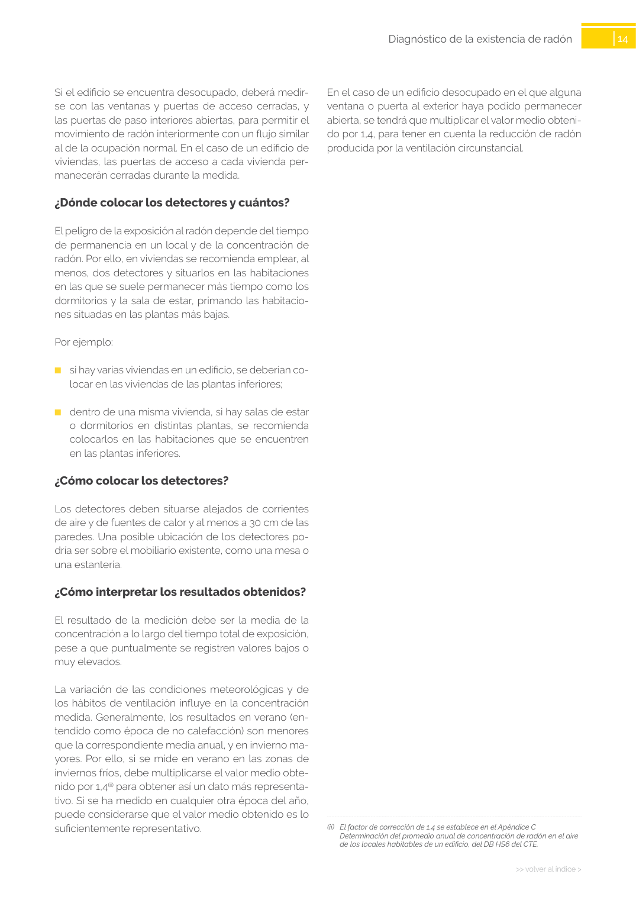

GUIA · ¿Cómo colocar los detectores? · versión sin-fecha · capa guia
Formatos: JSON compacto · Markdown · PDF fuente
Ámbito del documento · texto del ámbito · documento y tablas
Tipo: tablas, figuras · nivel 3 · sección estimada: Capítulo · padre: a0036
¿Cómo colocar los detectores? Los detectores deben situarse alejados de corrientes de aire y de fuentes de calor y al menos a 30 cm de las paredes. Una posible ubicación de los detectores po dría ser sobre el mobiliario existente, como una mesa o una estantería.

PDF fuente redistribuible: copia fiel enlazada en esta página (SHA256 verificado).